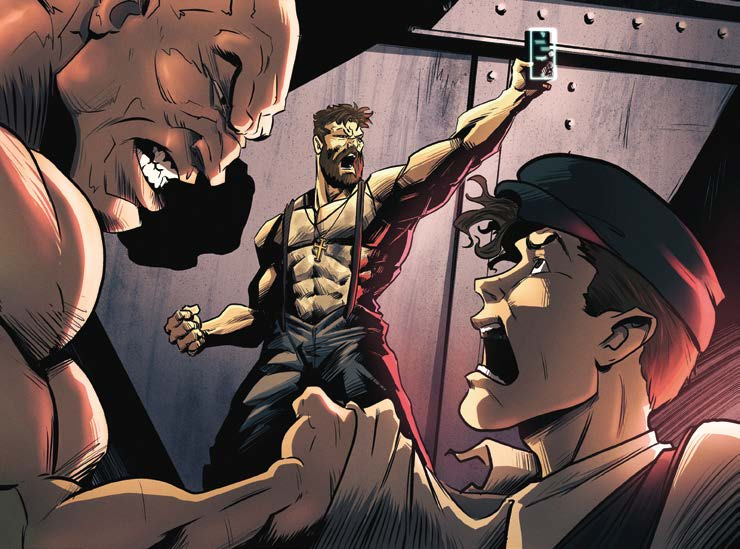

El otro se persigna y empuja a Javier, que en medio del susto ve que ambos llevan una cadenita con una cruz diminuta en el cuello.
—¡Es brujería!
Seguro.
Vamos.
Vamos a llevarlo con Peppone, para que se ocupe de él.
Ay, Dio, que no nos haya echado una maldición.
Lo toman con fuerza del brazo y Javier ya se ve metido en un gigantesco problema.
Entonces, desesperado, grita pidiendo ayuda.
Confía en que los hombres que el capitán dijo que los vigilaban estén en la vuelta.
Pero nada.
Nadie aparece.
Vuelve a gritar con todas las fuerzas que le quedan.